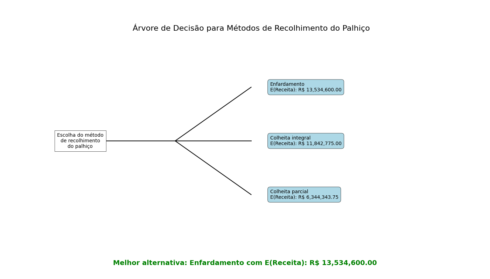

Selecione uma Região para Análise de Previsão
Passo 1: Entendendo o Comportamento do Preço
Antes de prever, precisamos entender. A análise de decomposição divide a série de preços em seus componentes fundamentais: a Tendência de longo prazo, os ciclos de Sazonalidade e os Resíduos (ruído aleatório).
Decomposição da Série Temporal
 Clique na imagem para expandir.
Clique na imagem para expandir.
Passo 2: Preparação e Limpeza dos Dados
Com os padrões identificados, o próximo passo foi tratar os "outliers" – valores atípicos que podem distorcer a análise. Isso garante uma série temporal mais estável e previsões mais confiáveis.
Detecção e Tratamento de Outliers
 Clique na imagem para expandir.
Clique na imagem para expandir.
Passo 3: Escolha e Validação dos Modelos
Aplicamos quatro abordagens estatísticas e comparamos seus resultados. A tabela abaixo mostra o desempenho de cada modelo ao prever os últimos 5 meses de dados históricos conhecidos (backtesting), validando sua eficácia antes de usá-los para prever o futuro.
Prophet
Excelente para dados com fortes tendências sazonais. Robusto a dados faltantes e mudanças de tendência.
ARIMA
Modelo estatístico clássico ideal para capturar tendências e dependências nos dados.
SARIMA
Evolução do ARIMA que adiciona um componente sazonal, tornando-o especialmente poderoso para este tipo de dado.
STL Forecast
Um método robusto que decompõe a série em Tendência, Sazonalidade e Resíduos, e depois prevê cada componente.
Métricas de Validação dos Modelos (Backtesting)
Analisando a região SUDESTE...
| Modelo | MAE (Erro Médio Absoluto) | MSE (Erro Quadrático Médio) | RMSE (Raiz do Erro Quadrático Médio) |
|---|
Passo 4: Previsões e Análise de Cenários Futuros
Com os modelos validados, geramos as previsões para os próximos 16 meses. O destaque abaixo aponta o modelo com melhor aderência aos dados históricos, servindo como nossa principal referência para o futuro.
⭐ Modelo em Destaque
Com base na validação, o modelo mais preciso para esta região foi o...
Comparativo de Previsões de Preço
 Clique na imagem para expandir.
Clique na imagem para expandir.
Tabela Detalhada (Próximos 16 Meses)
Passo 5: Análise de Decisão Baseada em Dados Históricos
Esta análise utiliza uma Árvore de Decisão para determinar a melhor estratégia de recolhimento de palhiço, baseada na probabilidade de ocorrência de diferentes faixas de preço extraídas de toda a série histórica. O objetivo é escolher a alternativa com o maior Valor Monetário Esperado (E(Receita)).
Árvore de Decisão Comparativa das Alternativas
O gráfico abaixo consolida os resultados, apontando a melhor alternativa geral com base nos dados históricos da região Sudeste/Centro-Oeste.
 Clique na imagem para expandir.Galeria de Análises de Suporte
Passo 6: Ferramenta de Análise de Investimento (Baseada em Previsões Futuras)
Diferente da Árvore de Decisão, que usa probabilidades históricas, esta ferramenta utiliza as previsões de preço para os próximos 16 meses geradas pelos modelos. Ela permite simular um cenário de investimento futuro, calculando a economia que seria gerada ao produzir energia própria em vez de comprá-la da rede.
| Modelo de Previsão | Economia Total em 16 meses | Resultado (Lucro/Prejuízo) | Retorno do Investimento (Payback) | Recomendação |
|---|